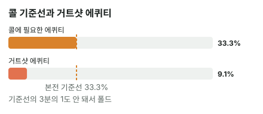

안녕하세요. I01에서 플러시 드로우는 9장, 거트샷은 4장이라고 셌죠. 오늘은 그 4장뿐인 거트샷으로 턴에 팟벳을 맞는 장면이에요.
"8 하나만 나오면 스트레이트인데…" 싶은 순간이에요. 그런데 숫자로 보면 답이 꽤 분명해요. 오늘은 그 답을 확인하고, 한 걸음 더 나가서 "맞으면 크게 받으니까 괜찮지 않나?"가 숫자로 얼마짜리 기대인지까지 따져 볼게요.
이 글에서 배울 것
- 턴의 거트샷이 리버 한 장에 맞을 확률, 그리고 상대 레인지를 알면 그 확률이 조금 올라가는 이유
- 팟벳의 기준선과 비교해 얼마나 모자란지 크기로 느끼기
- "맞으면 크게 받는다"가 콜이 되려면 리버에 얼마를 더 받아야 하는지
오늘의 핸드
Hero (BB 자리 · 스택 100BB)


프리플랍
상대(BTN) 2.5BB 오픈 → SB 폴드 → Hero 콜
팟 5.5BB
플랍 · 팟 5.5BB


Hero 체크 → 상대 1.75BB 벳 → Hero 콜
Hero는 하이카드. J-T-9-?-7, 8 하나만 나오면 스트레이트인 거트샷이에요.
턴 · 팟 9BB


Hero 체크 → 상대 9BB 벳(팟벳) → Hero는 콜? 폴드?
턴 2♣로 클럽이 세 장(Hero의 9♣7♣ + 보드 2♣)이 됐어요. 하지만 플러시엔 클럽이 두 장 더 필요한데 남은 카드는 리버 한 장뿐이라, 플러시는 이제 안 돼요. Hero에게 남은 건 여전히 8 거트샷이에요.
결론부터 말할게요. 오늘 가정한 상대라면 폴드가 이득입니다.
남은 베팅이 있어 실제 결과는 달라질 수 있어요. 그래서 오늘은 금액(EV) 대신 에퀴티 vs 필요 에퀴티로만 판정해요.
1단계. 필요 에퀴티
필요 에퀴티 = 콜해서 본전이 되려면 최소한 이겨야 하는 확률, 비유하면 시험의 합격선이었죠(B14).
필요 에퀴티 = 9(Hero 콜) ÷ (9(원래 팟) + 9(상대 벳) + 9(Hero 콜)) = 9 ÷ 27 = 33.3%
팟벳이니 3번 중 1번은 이겨야 해요(B08). 이게 무슨 뜻이냐면, 오늘 Hero의 점수가 3번에 1번을 못 넘으면 불합격이라는 거예요.
2단계. 아웃츠 — 8만 4장
Hero가 아는 카드(Hero 2장 + 보드 4장)를 빼면 남은 카드는 46장이에요. 그중 스트레이트를 만드는 건 8♠ 8♥ 8♦ 8♣, 4장이에요.
리버 한 장에 맞을 확률 = 4 ÷ 46 = 약 8.7%
남은 카드가 한 장이면 "아웃츠 × 2"로 빠르게 어림할 수도 있어요. 4 × 2 = 8, 즉 8%. 어느 쪽으로 봐도 10번에 1번이 안 돼요.
3단계. 상대 레인지 (가정 레인지 기준)
상대가 팟벳하는 핸드
상대가 턴에 팟벳하는 핸드를 J 탑페어(AJ·KJ·QJ), 투페어(같은 무늬 JT), 오버페어(QQ 이상)로 가정할게요. 셋(JJ·TT·33·22)이나 다른 무늬 JT 같은 핸드도 있을 수 있지만, 이번 가정에서는 뺐어요.
| 핸드 | 콤보 | 왜 이 숫자? |
|---|---|---|
| AJ | 12 | J 3장(J♠는 보드) × A 4장 |
| KJ | 12 | J 3장 × K 4장 |
| QJ | 12 | J 3장 × Q 4장 |
| JTs | 2 | J♠·T♦가 보드에 있어 ♠·♦ JT는 못 만들고, J♥T♥·J♣T♣ 두 개만 |
| 6 | ||
| KK | 6 | |
| AA | 6 | |
| 합계 | 56 |
💡 빨리 세는 팁: 보드에 J 1장 → 남은 J 3장, 그래서 J와 다른 숫자는 3 × 4 = 12
레인지를 알면 확률이 조금 올라요
이 레인지 상대로 리버 한 장까지 본 Hero 에퀴티는 약 9.09%예요. 아웃츠 확률(약 8.7%)보다 조금 높죠.
이유는 상대 손에 8이 없기 때문이에요. 가정 레인지의 핸드에는 8이 하나도 없으니, 상대 두 장을 뺀 44장 안에 8 네 장이 다 남아 있어요. 그래서 4 ÷ 44 = 약 9.09%예요. 상대가 무엇을 들었는지 알면, 그 정보만큼 확률이 바뀌는 거예요.
4단계. 비교
| 숫자 | |
|---|---|
| 필요 에퀴티 | 33.3% |
| Hero 에퀴티 | 약 9.09% |

필요한 것의 3분의 1도 안 돼요. 거트샷 한 장으로 팟벳을 따라가면 폴드가 맞아요.
왜 그럴까: "맞으면 크게 받는다"는 얼마짜리 기대일까?
11번 콜하면
상대 레인지를 오늘 가정대로 보면 Hero가 이길 확률은 4 ÷ 44 = 1/11, 11번 중 1번이에요. 같은 콜을 11번 한다고 해 볼게요.
- 빗나간 10번: 9BB씩, 10 × 9 = 90을 잃어요
- 맞은 1번: 지금 팟에서 이기면 받는 돈은 원래 팟 9BB + 상대 벳 9BB = 18BB예요
리버 베팅을 빼고 지금 팟만 보면, 이건 11번에 72를 잃는 콜이에요. 위에서 판정한 "9.09% < 33.3%"를 돈으로 바꿔 본 것뿐이고, 리버에 오갈 돈은 아직 넣지 않았어요. 그래서 이 숫자는 결론이 아니라 "리버에서 얼마를 메워야 하나"를 재는 자로 써요.
그 차이를 리버에서 메우려면
콜이 본전이 되려면 8이 나왔을 때 리버에 90 − 18 = 72를 더 받아내야 해요. 이렇게 맞았을 때 더 받아낼 수 있는 돈을 임플라이드 오즈라고 하는데, 자세한 건 I09에서 배워요.
상대도 Hero처럼 100BB로 시작했다고 가정하면, 턴 벳까지 내고 남은 칩은 100 − 2.5 − 1.75 − 9 = 86.75예요. 상대가 그중 대부분을 리버에 넣어 줘야 하는 크기죠. 그것도 8이 떨어진 리버에서요.
그런데 8은 눈에 띄는 카드예요
리버에 8이 나오면 보드는 J-T-8-3-2가 돼요. 이 보드는 9-7(Hero)뿐 아니라 Q-9로도 스트레이트가 되는 보드라, 상대 눈에도 스트레이트 가능성이 보여요. 오버페어나 J 탑페어로는 그 리버에 큰돈을 넣기를 망설일 수 있죠.
게다가 Hero의 스트레이트는 7-8-9-T-J로 낮은 쪽이에요. 상대가 Q-9를 들었다면 8-9-T-J-Q로 Hero보다 높아서, 맞고도 크게 잃어요. 오늘 가정 레인지에는 Q9가 없어서 계산에 넣지 않았지만, 실제 상대라면 이런 핸드가 섞일 수 있어요. 이렇게 맞고도 지는 쪽은 I09에서 역 임플라이드 오즈로 다뤄요.
이게 무슨 뜻이냐면, 아웃츠가 적은 드로우는 받아야 할 돈은 크고, 받을 가능성은 줄어드는 리버에서 확률 차이를 메워야 한다는 거예요.
자주 하는 실수
실수 1. "8만 나오면 이기니까 콜" 이길 수 있는 카드가 있다는 것과 충분하다는 건 달라요. 오늘 이길 카드는 44장 중 4장, 약 9.09%예요. 기준선 33.3%의 3분의 1도 안 되죠. 대신 아웃츠를 셌으면 확률로 바꿔 기준선과 나란히 놓아요.
실수 2. 턴에서 × 4로 어림하기 플랍 때 버릇처럼 4 × 4 = 16으로 어림하는 실수예요. 턴에서는 리버 한 장만 남았어요. 그래서 × 2, 8%예요. × 4로 보면 확률을 두 배로 부풀리게 돼요. 대신 남은 카드가 몇 장인지부터 세고 2와 4 중 하나를 골라요.
실수 3. "맞으면 상대 스택을 다 받는다" 8이 떨어진 리버를 떠올려 보면, 가정 레인지 56콤보 중 투페어는 JTs 2콤보뿐이고 나머지는 전부 원페어(J 탑페어·오버페어)예요. 원페어는 스트레이트가 보이는 보드에서 큰 벳을 받으면 접을 수 있는 핸드죠. 큰 콜을 해 줄 핸드가 레인지에 얼마나 있는지 세어 보면, "스택을 다 받는다"는 기대는 금방 작아져요. 대신 맞은 리버에서 상대 레인지 중 누가 큰돈을 낼지부터 따져요.
"플랍에서는 콜했는데, 턴에선 왜 폴드예요?"
좋은 질문이에요. 솔직하게 말하면, 플랍 콜도 지금 팟만 보면 숫자가 모자랐어요.
플랍 콜도 빠듯했어요
플랍 기준선은 1.75 ÷ (5.5 + 1.75 + 1.75) = 1.75 ÷ 9로, 5번에 1번보다 조금 낮은 선이에요. 그런데 턴 한 장에 8이 나올 확률은 상대 두 장까지 뺀 45장 중 4장, 11번에 1번도 채 안 돼요.
"턴·리버 두 장이 남았잖아요" 싶을 수 있어요. 그런데 두 장을 다 본다고 쳐도 기준선에 조금 못 미치고, 턴에 또 벳이 오면 그 돈까지 내야 리버를 봐요. 그래서 두 장 확률로 플랍 콜을 정당화할 수는 없어요. 이 함정도 I09에서 다뤄요.
그래도 플랍엔 덤이 있었어요
그 플랍 콜은 숫자 대신 덤에 기댄 콜로 읽을 수 있어요. 벳이 팟의 3분의 1도 안 될 만큼 작았고, 턴·리버에 클럽이 연달아 나오면 플러시가 되는 백도어 플러시(두 장이 더 와야 완성되는 드로우)가 있었고, 맞았을 때 더 받을 돈도 있었죠. 그 콜이 옳았는지는 이 덤을 얼마나 쳐주느냐에 달려요.
턴은 덤이 사라졌어요
턴 2♣로 백도어 플러시는 절반만 왔고, 리버 한 장으로는 끝낼 수 없어요. 그런데 기준선은 33.3%로 뛰었죠. 덤은 사라지고 기준선은 올랐으니 결론이 바뀐 거예요. 그래서 드로우는 스트리트마다 처음부터 다시 계산해요.
숫자가 뒤집히는 지점
기준은 두 가지예요.
- 상대 벳 크기가 바뀌면: 필요 에퀴티가 다시 계산돼요. 그 값이 Hero 에퀴티(약 9.09%)보다 낮아지는 작은 벳이라면 콜, 높으면 폴드
- Hero 에퀴티가 바뀌면: 지금 필요 에퀴티(33.3%)보다 높은지 낮은지만 보면 돼요
선생님의 한마디
턴에 드로우로 벳을 맞으면 이 순서로 점검해요.
- 남은 카드가 한 장인지 확인하고 × 2로 어림해서 기준선 옆에 놓기
- 내 아웃츠가 상대 손에 묶여 있지 않은지, 맞아도 지는 카드(오늘의 Q-9 같은)는 없는지 보기
- 모자라면 맞은 리버에서 상대가 무슨 핸드로 큰돈을 낼지 그려 보고, 안 그려지면 폴드
연습 문제 (같은 보드, 같은 Hero 핸드)
홀덤학습 에퀴티 계산기에서 내 카드를 고른 뒤 [콜 수익] 칸에 지금 팟(상대 벳 포함)과 콜 금액을 넣으면 필요 에퀴티가 나와요.
문제 1. 상대가 턴에 0.75BB만 걸었다면?
정답 보기
필요 에퀴티 = 0.75 ÷ (9 + 0.75 + 0.75) = 약 7.14% < 9.09% → 콜. 아웃츠가 적어도 벳이 아주 작으면 기준선이 그보다 낮아질 수 있어요.
문제 2. 상대가 4.5BB(하프팟)를 걸었다면?
정답 보기
필요 에퀴티 = 4.5 ÷ (9 + 4.5 + 4.5) = 25% > 9.09% → 폴드. 벳을 절반으로 줄여도 거트샷에게는 여전히 한참 비싸요.
핵심 정리
- 턴의 거트샷은 4장, 리버 한 장에 약 8.7%. 상대 손에 8이 없다고 보면 4 ÷ 44로 약 9.09%
- 팟벳의 기준선 33.3%와 비교하면 3분의 1도 안 돼요
- 모자란 확률을 임플라이드 오즈로 메우려면 (상대도 100BB로 시작했다면) 상대 스택 대부분이 필요한데, 그 리버는 상대에게도 위험이 보이는 리버예요
- 플랍 콜이 됐다고 턴 콜이 되는 건 아니에요. 벳 크기·남은 카드·덤이 바뀌면 처음부터 다시 계산해요
정리하며
오늘은 턴에 거트샷으로 팟벳을 맞은 장면을 계산했어요.
기준선은 33.3%인데 Hero가 이길 확률은 약 9.09%였죠. 상대 레인지에 8이 없다고 보니 아웃츠 확률보다 조금 올랐지만, 차이는 그대로 컸어요. 그 차이를 리버에서 메우려면 상대도 100BB로 시작했다고 볼 때 남은 스택 대부분을 받아야 했고, 8 리버는 그러기 어려운 카드였어요.
다음 글 I09에서는 오늘 맛보기로 계산한 그 임플라이드 오즈를 정면으로 다뤄요. 오늘은 한 장면이었다면, 다음 글은 어떤 드로우·벳 크기에도 쓸 수 있는 공식으로 넓혀 봐요.
AI 작성 · 숫자는 계산 검증 · 가정 레인지 기준 (솔버 결과 아님) · 이번 한 번의 결정 기준(리버 베팅은 계산에 넣지 않음)